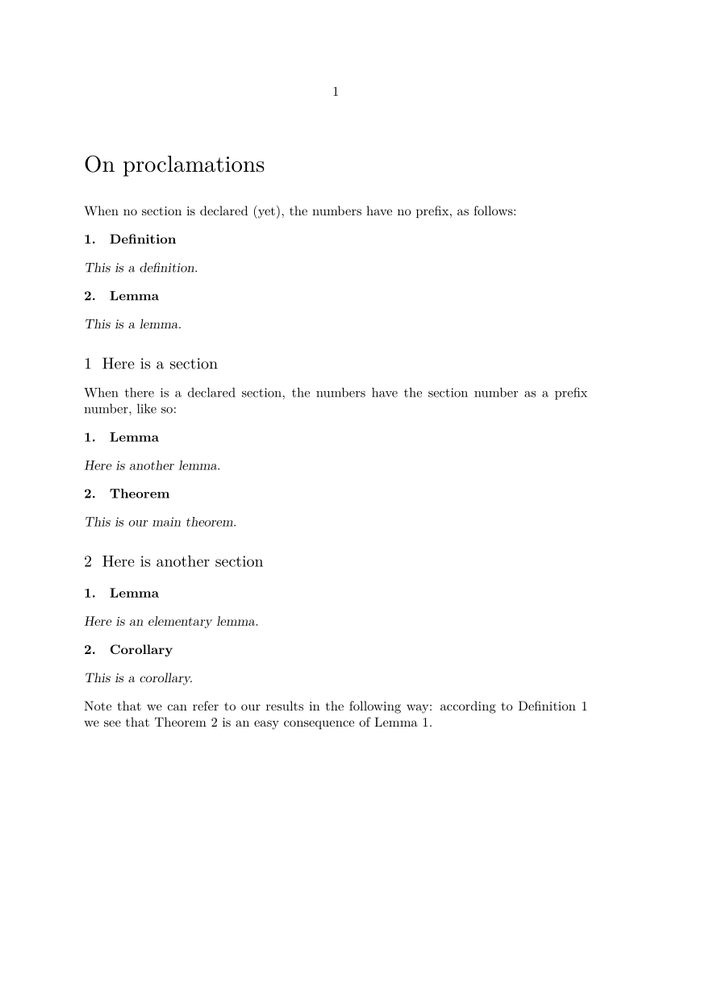
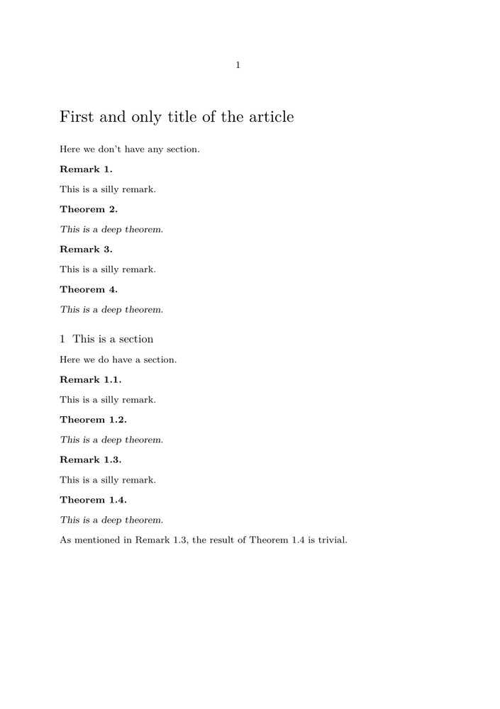

In Plain-TeX there is the command \proclaim which is very handy when writing mathematics and stating theorems, lemmas, definitions and so on. Unfortunately it doesn't allow one to number automatically these statements in order to refer to them through cross referencing, and somehow it has disappeared from ConTeXt.
If one wishes to number all these ‘proclaimations’, regardless of type and in the order in which they appear, here is a solution which works very well in ConTeXt Mark II. (For a solution with Mark IV see below.)
-
\setuppapersize[A5] %% defining an enumeration environment replacing Plain-TeX's \proclaim \defineenumeration[proclaim] [text=, style=slanted, title=yes, titleleft=, titleright=, location=serried, width=fit, right={. }] %% this can be changed according to one's wishes \setupnumber[proclaim][way=bysection, numbersection=yes] %% end definition \proclaim \starttext \title{On proclamations} \blank When no section is declared (yet), the numbers have no prefix, as follows: \startproclaim[def:test]{Definition} This is a definition. \stopproclaim \startproclaim{Lemma} This is a lemma. \stopproclaim \section{Here is a section} When there is a declared section, the numbers have the section number as a prefix number, like so: \startproclaim{Lemma} Here is another lemma. \stopproclaim \startproclaim[thm:result]{Theorem} This is our main theorem. \stopproclaim \section{Here is another section} \startproclaim[lem:resultB]{Lemma} Here is an elementary lemma. \stopproclaim \startproclaim{Corollary} This is a corollary. \stopproclaim Note that we can refer to our results in the following way: according to \in{Definition}[def:test] we see that \in{Theorem}[thm:result] is an easy consequence of \in{Lemma}[lem:resultB]. \stoptext
- 
In Mark IV there is another solution which consists in defining first a certain ‘enumeration’ (in the example below for Remarks) and then use the counter created for this enumeration in other enumerations such as lemmas, theorems, etc.
-
% mode=mkiv \setuppapersize[A5] \defineenumeration[remark] [text=Remark, location=serried, width=fit, right={.~}] \setupenumerations[remark] [prefix=yes, % or prefixsegments=chapter:section prefixsegments=section] \setupnumber[remark][way=bysection] \defineenumeration[theorem] [text=Theorem, location=serried, width=fit, counter=remark, % only use counter of remark style=slanted, right={.~}] \setupenumerations[theorem] [prefix=yes, prefixsegments=section] \starttext \title{First and only title of the article} Here we don't have any section. \startremark This is a silly remark. \stopremark \starttheorem This is a deep theorem. \stoptheorem \startremark This is a silly remark. \stopremark \starttheorem This is a deep theorem. \stoptheorem \section{This is a section} Here we do have a section. \startremark This is a silly remark. \stopremark \starttheorem This is a deep theorem. \stoptheorem \startremark[rem:silly] This is a silly remark. \stopremark \starttheorem[thm:deep] This is a deep theorem. \stoptheorem As mentioned in \in{Remark}[rem:silly], the result of \in{Theorem}[thm:deep] is trivial. \stoptext
- 